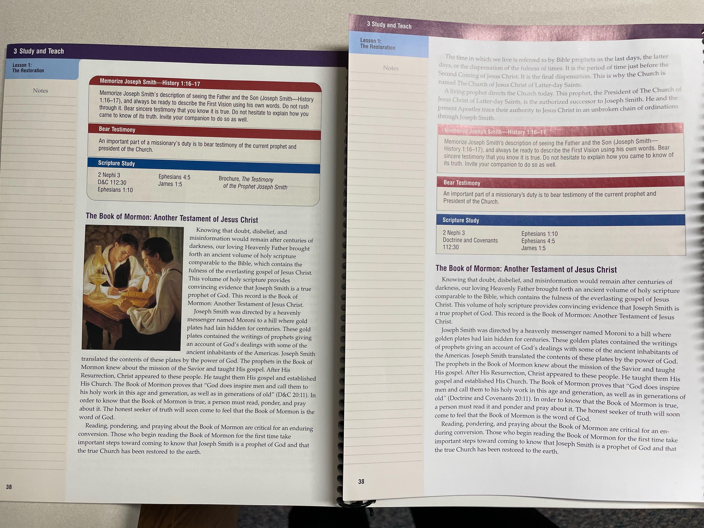

👅 Book of Mormon Translation¶
Estimated time to read: 18 minutes
Please note that this page is due for an update! It's more of a stream-of-consciousness reacting to the Gospel Topics Essay. May be rearranged if you come back later.
Gospel Topic Essay on BoM translation¶
The following quotes are all taken from this essay; source links (should) take you to the paragraph in question.
Joseph’s wife Emma insisted that, at the time of translation, Joseph “could neither write nor dictate a coherent and well-worded letter, let alone dictate a book like the Book of Mormon.”
This quotes Emma saying that JS couldn’t even write a letter properly; excerpt from Saints’ Herald, an early church newspaper.
Of the translation process, Oliver Cowdery says:
”These were days never to be forgotten—to sit under the sound of a voice dictated by the inspiration of heaven.”
Does “the inspiration of heaven” sound like using a seer stone to translate physical plates?
A Seer Stone, which was used for treasure hunting and scrying, conveniently was also useful for translating reformed Egyptian. Seems dubious that we could believe he could successfully do both with the same stone; my sensibilities are that he could do one or the other, and there’s plenty of records of him getting into shenanigans prior to receiving the plates.
Quote:
In the preface to the 1830 edition of the Book of Mormon, Joseph Smith wrote: “I would inform you that I translated [the book], by the gift and power of God.” When pressed for specifics about the process of translation, Joseph repeated on several occasions that it had been done “by the gift and power of God” and once added, “It was not intended to tell the world all the particulars of the coming forth of the book of Mormon.”
No red flags here? Does none of this sound out of sorts?
“Nevertheless, the scribes and others who observed the translation left numerous accounts that give insight into the process. Some accounts indicate that Joseph studied the characters on the plates. Most of the accounts speak of Joseph’s use of the Urim and Thummim (either the interpreters or the seer stone), and many accounts refer to his use of a single stone.”
So... Not "dictated by the inspiration of heaven?" Not only do we have no clear answer for the translation process, we now have multiple conflicting descriptions.
Some, Most, Many, sounds like we'd really like to qualify these claims, doesn't it?
“Emma described Joseph “sitting with his face buried in his hat, with the stone in it, and dictating hour after hour with nothing between us.”
Were there plates? Was there a breastplate to which two stones were affixed? Was this hat large enough to contain all these items?
According to Emma, the plates “often lay on the table without any attempt at concealment, wrapped in a small linen table cloth.”
Not concealed, except it was covered up.
Well, what's the problem?¶
This would not be upsetting to me if I was told sooner, or if I was raised to believe that the BoM was given by revelation via a seer stone. This is upsetting because of all the lessons in Primary and YM and Seminary etc, that Joseph used physical, tangible plates— the same ones that Mormon engraved and Moroni buried in New York (maybe)— and translated them. In fact, I'm pretty sure that the Preach My Gospel manual I used on the mission had this exact depiction.
Preach My Gospel¶
Ooh, it's even better than that! The PDF of the 2004 print editionshows the illustration of Joseph and, presumably Oliver, reading from three-ring bound plates. I found my wife's printed copy of PMG, and sure enough, there's the same illustration. Meanwhile, the web edition accessible online, as well as the mobile Gospel Library app, have both omitted that illustration. 🤔
 (Photo taken from https://www.reddit.com/r/exmormon/comments/1bc3w9c/i_feel_like_something_is_missing/)
Whenever I encountered the “rock-in-a-hat” claim, I always dismissed it as misguided anti-Mormon rhetoric. Imagine my dismay to find out that the “baseless” Anti-Mormon claims were true. Imagine my surprise to find that South Park was more honest than my seminary & institute teachers— even in the MTC. The church published this essay while I was on a mission, perpetuating the idea that JS used plates.
The issue is not the seer stone. The issue is that I was raised to believe that this "seer stone" is an outright fabrication meant to defame our beloved prophet, who definitely just translated by personally examining physical plates. The issue is that I didn’t find out until well after having served a mission that it was a seer stone. What’s worse, is that digging into these claims, I’ve felt the rhetoric that “The information was there all along,” and “you should’ve known this,” “we never hid that detail.”
Oh, shut the fuck up.
Claims against using the plates¶
When Cowdery returned to Church membership in 1848 he spoke to an Iowa conference. His words there were recorded by Reuben Miller: “I wrote with my own pen the entire Book of Mormon (save a few pages) as it fell from the lips of the Prophet as he translated it by the gift and power of God by means of the Urim and Thummim, or as it is called by that book, holy interpreters. I beheld with my eyes and handled with my hands the gold plates from which it was translated. I also beheld the Interpreters. That book is true. … I wrote it myself as it fell from the lips of the Prophet.”
— By the Gift and Power of God, Ensign Sept 1977
Oliver Cowdery is reported to have testified in court that the Urim and Thummim enabled Joseph “to read in English, the reformed Egyptian characters, which were engraved on the plates” (“Mormonites,” Evangelical Magazine and Gospel Advocate, 9 Apr. 1831). If these reports are accurate, they suggest a process indicative of God’s having given Joseph “sight and power to translate”
— By the Gift and Power of God, Ensign January 1977
(Note: the above two sources have the same name, same year, different month, different content. Threw me off real good)
Then-Elder Nelson wrote about this in the Ensign in 1993.
These records were engraven on plates which had the appearance of gold. Each plate was six inches wide and eight inches long, and not quite so thick as common tin. They were filled with engravings, in Egyptian characters, and bound together in a volume as the leaves of a book, with three rings running through the whole. The volume was something near six inches in thickness, a part of which was sealed. The characters on the unsealed part were small, and beautifully engraved. The whole book exhibited many marks of antiquity in its construction and much skill in the art of engraving. With the records was found a curious instrument, which the ancients called “Urim and Thummim,” which consisted of two transparent stones set in the rims of a bow fastened to a breastplate. Through the medium of the Urim and Thummim I translated the record by the gift and power of God.
— The Wentworth Letter, Ensign July 2002
This doesn't fit quite as neatly— this is reportedly in Joseph's own voice, claiming he uses the Urim & Thummim to translate the plates directly.
In 2000, two BYU religion professors, Joseph Fielding McConkie (son of Elder Bruce R. McConkie) and Craig J. Ostler, wrote an essay titled, “The Process of Translating the Book of Mormon.” (Check the URL: this is BYU-I’s online library.) They wrote:
Thus, everything we have in the Book of Mormon, according to Mr. Whitmer, was translated by placing the chocolate-colored stone in a hat into which Joseph would bury his head so as to close out the light. While doing so he could see ‘an oblong piece of parchment, on which the hieroglyphics would appear,’ and below the ancient writing, the translation would be given in English. Joseph would then read this to Oliver Cowdery, who in turn would write it. If he did so correctly, the characters and the interpretation would disappear and be replaced by other characters with their interpretation.
Alright, I guess if we go with divine intervention, we can accept this unprecedented method. This recounting could be what contributes to Joseph asserting that this is "the most correct of any book on earth".
That does bring into question why there were later revisions or edits, though.
After laying the groundwork, the professors continue:
Finally, the testimony of David Whitmer simply does not accord with the divine pattern. If Joseph Smith translated everything that is now in the Book of Mormon without using the gold plates, we are left to wonder why the plates were necessary in the first place. It will be remembered that possession of the plates placed the Smith family in considerable danger, causing them a host of difficulties. If the plates were not part of the translation process, this would not have been the case. It also leaves us wondering why the Lord directed the writers of the Book of Mormon to take a duplicate record of the plates of Lehi. This provision which compensated for the loss of the 116 pages would have served no purpose either.
Further, we would be left to wonder why it was necessary for Moroni to instruct Joseph each year for four years before he was entrusted with the plates. We would also wonder why it was so important for Moroni to show the plates to the three witnesses, including David Whitmer. And why did the Lord have the Prophet show the plates to the eight witnesses? Why all this flap and fuss if the Prophet didn’t really have the plates and if they were not used in the process of translation?
What David Whitmer is asking us to believe is that the Lord had Moroni seal up the plates and the means by which they were to be translated hundreds of years before they would come into Joseph Smith’s possession and then decided to have the Prophet use a seer stone found while digging a well so that none of these things would be necessary after all. Is this, we would ask, really a credible explanation of the way the heavens operate?
I don't know that there's much more to add, really. I don't like the idea that scholarly studies can reliably conclude so many things, excluding theological matters- I imagine that would be the dismissal for this account: "spiritual matters require spiritual methods," or something to that effect. That's awfully convenient when a 19th century con artist's words conflict with evidence.
Tools used¶
Joseph Smith used to use the same seer stone to find treasure before he used it to “translate” the Book of Mormon. What was the point of the “Urim and Thummim”? Why would God include them if Joseph didn’t actually need them to “translate” the writing on the plates?
Because of his spiritual nature and his willingness to learn the truth, Joseph Smith was tested and found worthy to be the translator of the Book of Mormon. To help him with the translation, Joseph found with the gold plates “a curious instrument which the ancients called Urim and Thummim, which consisted of two transparent stones set in a rim of a bow fastened to a breastplate.”
Joseph also used an egg-shaped, brown rock for translating called a seer stone. The translating was done at Peter Whitmer’s home, a friend of the Prophet’s where Oliver Cowdery, Emma Smith (Joseph’s wife), one of the Whitmers, or Martin Harris wrote down the words spoken by the Prophet as soon as they were made known to him.
— A Peaceful Heart, Friend magazine, Sept 1974
I'm legitimately curious to know both how and why Smith was 'tested' before being designated as a translator. I'm pretty sure those terms were not mutually exclusive. Was that not always the case? Was he called to be a prophet after acquiring the plates and U&T?
Seer Stone & Martin Harris¶
Fun fact: Martin once swapped out the seer stone to see if Joseph would notice. He did notice, but I still think it's fascinating to read about.
He once replaced Joseph’s seer stone with another stone to see if Joseph would notice the difference. When Joseph was unable to continue translating, Martin confessed his ruse and returned the seer stone. When Joseph asked him why he had done it, Martin explained that he wanted to “stop the mouths of fools, who had told him that the Prophet had learned those sentences and was merely repeating them.”
— The Contributions of Martin Harris, Revelations in Context, Church History study manual
Also, this blog describes this interaction, citing New Witnesses for God, Vol. 2 by B.H. Roberts.
Roberts wrote, “. . . on resuming their labors of translation Martin put in place of [the Seer Stone] the stone that he had found. He said that the Prophet remained silent unusually long and intently gaining in darkness, no trace of the usual sentence appearing. Much surprised Joseph exclaimed: “Martin! What is the matter? All is as dark as Egypt.” Martin’s countenance betrayed him, and the Prophet asked Martin why he had done so. Martin said, to stop the mouths of fools, who had told him that the Prophet had learned those sentences and was merely repeating them.”
Don't think that I'd call this a significant event, but I don't know where else to put it. "It's just a prank, bro, there's the camera over there!" 🤓
Urim & Thummim¶
Conveniently, the “Urim and Thummim” AKA the “breastplate” was taken back up to heaven after Martin Harris lost the original 116 pages of the Book of Mormon. (Maybe. I've heard this explanation verbally, but haven't yet found any written account of this happening.) Joseph had no other means of “translation” other than his seer stone in his hat.
Or did he?
The speaker had been present many times when he was [translating] the New Testament, and wondered why he (Joseph) did not use the Urim and Thummim, as in translating the Book of Mormon. While this thought passed through the speaker's mind, Joseph, as if he read his thoughts, looked up and explained that the Lord have him the Urim and Thummim when he was inexperienced in the Spirit of inspiration. But now he had advanced so that that he understood the operations of that Spirit, and did not need the assistance of that instrument.
— _The Latter-Day Saints' Millennial Star_, 11 August 1874
Well. Alright. Granted, this account is published in 1874, and it doesn't explicitly state when this interaction took place. But if, by this point, Joseph didn't need any translation tools, he can just do it all in his head...?
Stone? What stone?¶
WALTERS: Well I thought somebody said that Joseph Fielding had had Joseph Smith’s seer stone.
RICHARDS: No. We don’t have that.
WALTERS: You don’t have that?
RICHARDS: No.
WALTERS: Oh.
RICHARDS: We have got some of the early writings of the Prophet Joseph and things of that kind, and testimony of when Joseph Smith performed a plural marriage for them, but – things of that kind in the Historian’s office. But we have [unintelligible] church.
VLACHOS: Is the seer stone in the historical department?
RICHARDS: We don’t have a seer stone. That went back with the plates when [unintelligible]
WALTERS: Oh! Okay, I hadn’t heard that. I see. I thought that somebody said that it was still out there somewhere.
VLACHOS: Do you know what it looked like?
RICHARDS: What?
VLACHOS: Do you know what the stone looked like?
RICHARDS: No. I’ve never seen it. And I don’t think there is any living man who has seen it.
— Correspondence With Le Grand Richards Regarding 1978 Interview; see also these interview excerpts concerning race
Anyway, here's an apologetic article & photograph of Joseph's seer stone on churchofjesuschrist.org.
"A Treasured Testament"¶
“Joseph Smith would put the seer stone into a hat, and put his face in the hat, drawing it closely around his face to exclude the light; and in the darkness the spiritual light would shine. A piece of something resembling parchment would appear, and on that appeared the writing. One character at a time would appear, and under it was the interpretation in English. Brother Joseph would read off the English to Oliver Cowdery, who was his principal scribe, and when it was written down and repeated to Brother Joseph to see if it was correct, then it would disappear, and another character with the interpretation would appear. Thus the Book of Mormon was translated by the gift and power of God, and not by any power of man.”
(David Whitmer, An Address to All Believers in Christ, Richmond, Mo.: n.p., 1887, p. 12.) Quote copied from Nelson's address.
So... no plates?
Although the Prophet would polish his skills over the years, Emma acknowledged that Joseph possessed only rudimentary literacy at the time he translated the gold plates:
“Joseph Smith … could neither write nor dictate a coherent and well-worded letter; let alone dictating a book like the Book of Mormon. And, though I was an active participant in the scenes that transpired, it is marvelous to me, ‘a marvel and a wonder,’ as much so as to any one else.” (Ibid.)
Because the Book of Mormon is a translation of a modified Hebrew language, it contains many Hebraisms. . . .
(Link)
Not reformed Egyptian?
*There are some things that the Book of Mormon is not. It is not a text of history, although some history is found within its pages. It is not a definitive work on ancient American agriculture or politics. It is not a record of all former inhabitants of the Western Hemisphere, but only of particular groups of people.
Even with qualifiers in that sentence, this is a bold claim. History is generally measured by multiple, independent, contemporary sources. How many other contemporary sources do we have? Jesus saying he'll be visiting other sheep?
Joseph’s Impact¶
Were Smith to have written it, what elements of his life would be reflected in it?
The BoM is exactly what you would expect from someone like Joseph Smith. It is totally superficial story mixed with protestant sermons.
- Hardly any women.
- One dimensional characters.
- Very little about government or laws.
- Nothing about the culture.
- Nothing about their cities.
- No weather.
- Nothing about commerce.
- No specific geography.
- No science.
Yet it has detailed statistics of casualties in battle.
As a piece of literature, this is utter crap. It is doubly awful of a read when consumed in its original form: no verses, 1000’s of grammar errors, no punctuation, no chapter headings— just one giant wall of text, page after page.
How would anyone have thought this to be divinely inspired, in its original edition? I suppose 19th century readers would be accustomed to that kind of formatting...?
Lost 116 Pages¶
God could have re-dictated a word perfect second translation to Joseph if He wanted to, but He didn’t because He was wise to the evildoers’ trickery, knowing that they would alter the text in the manuscript in order to ensnare Joseph. Thus he wouldn’t allow Joseph to re-translate the same passage a second time.
Of course, the bit about the evil-doers “altering” the text doesn’t make much sense unless Martin Harris (the scribe) was in on the trick as well, since the sole original manuscript was written in his (Martin's) hand. Any alterations would be immediately noticed and could be refuted by Harris with the statement “that’s not my handwriting”. If it somehow was his handwriting, Harris would have to be in on the evildoing. Harris would have to agree that he wrote the altered original.
Couldn’t the evildoers still have produced an altered typescript, hiding away the original Harris manuscript, and presenting that typescript as their “proof”? This is ridiculous logic, of course, since a typescript wouldn’t convince anyone and would be proof of nothing.